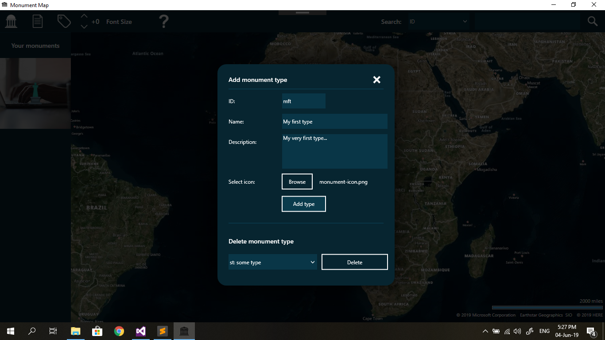

To describe a monument you can define specific type and add it as an additional description. Start by clicking the following icon: located in the top left corner of your screen. You can also use the "CTRL + T" shortcut for this. The following window will pop up:
Adding monument type consists out of 3 simple steps:
All fields must be filled in order to add monument type successfully. After type has been successfully added you can choose it when adding a new monument.
In order to delete a type, just select it from the box and click on delete. Keep in mind that you can not delete a default type or a type used by a monument.